Luke睡觉的死样儿~ @ Jan 06, 2009
啥叫睡觉的“死样儿”？瞧瞧Luke就知道了，呵呵~
每次我坐在沙发上看电视或看电影，它都会爬上沙发，先是舒服的在沙发上翻几个身，然后靠着我呼呼大睡。可是最让人无法忍受的是在它睡醒后，会抖一抖全身的毛，哇~那时侯恨不能把它踢出门去！

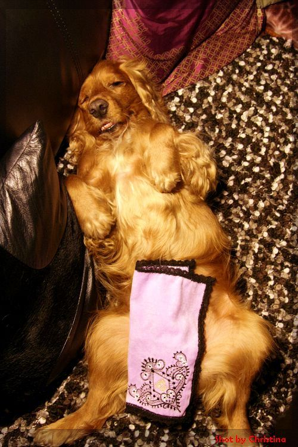
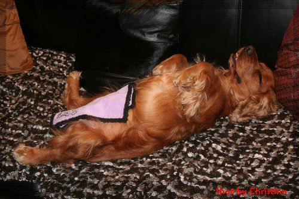
来张凶狠的小白牙~
啥叫睡觉的“死样儿”？瞧瞧Luke就知道了，呵呵~
每次我坐在沙发上看电视或看电影，它都会爬上沙发，先是舒服的在沙发上翻几个身，然后靠着我呼呼大睡。可是最让人无法忍受的是在它睡醒后，会抖一抖全身的毛，哇~那时侯恨不能把它踢出门去！


来张凶狠的小白牙~
常听到有人抱怨对公司的不满，这些人如今收入丰厚，在公司获得一小块发展空间，抱怨渐渐多起来，大致是干地多拿得少，即使每年已经位居公司的高收入行列。当我们抱怨的时候不要忘了饮水思源的含义！没见过离开公司的哪个人离开前整天嚷嚷的。公司喂不饱了，何需抱怨？只需一走了之，今后挣的每一分钱都是自己的，就不会抱怨了。成熟的职业人懂得一个道理：不给管理层出难题。
金融危机让大家的期望值都降低了，这对于牛势了十多年的中国职场，未必是坏事。泡沫散去，大家都可以冷静下来看清自己的处境和位置。这个市场的供需如何？自己的叫价究竟是高了还是低了？但这对于大部分人来说是道太难的题，因为通常人们不是对自己评估过高，就是把别人评估得过低。
偏巧看到英国《金融时报》专栏作家露西•凯拉韦(Lucy Kellaway) 写的一篇《Money, not meaning, is the new secret of happy work》，转载部分如下，以共勉：
在过去的十年里，富有的专业人士阶层对待工作形成了一种日益病态的态度。我们将工作和丰厚的薪水视为理所当然，如果奖金没有比前一年更多，我们还会愤愤不平。我们要求工作本身要有意思，更加危险和荒谬的是，我们还要求工作应该有意义。
所有这些要求导致的结果，当然就是不满。我们已经登上了管理学者马斯洛(Maslow)需求层次的最顶端，却发现金字塔顶的空气果真非常稀薄。作为一位知心大姐，我发现迄今为止，读者提问中最常见的问题，来自于富有的资深专业人士。他们的基本需求早已得到满足，因此备受煎熬的是他们的心灵。他们哭喊着：帮帮我，我很空虚。或者更糟：我的工作有什么意义？
在过去的几个月里，这类痛苦的抱怨已销声匿迹。当一个人的工作朝不保夕，而储蓄又日渐缩水时，寻找工作的意义本身就变得毫无意义了。工作的目的也变得更为简单：为自己和家人提供食物与住房（必要时支付教育费用）。如果我们能够做到这一点，那么除此之外我们获得的任何盈余都可视为一笔外财。一旦我们的期望值完全适应了这种新的现实、一旦我们将赚钱视作工作的主要动机，更强烈的满足感就会随之而来。
关于降低期望值可是有很多说法的。调查显示，女人在工作时其实比男人更加满足，尽管在工作量相同的情况下，女人收入更低，并且还要承担大部分家务活。原因很简单：女人对职业生活的期望值更低。同样，尽管气候寒冷阴霾、最高税率达68%，丹麦仍是全球最幸福的国家。坚忍克己的丹麦人对生活没有那么多奢求，而是清心寡欲、敝帚自珍。
哈，明天又要上班了。
元旦假期，一天给家人，一天给朋友，一天给自己，过得轻松而充实。
自己这一天，睡到中午起床，烧饭吃饭，然后看电影到天黑。受到前一天下馆子吃涮羊肉的启发，晚上在家里涮羊肉，清水里放了西红柿、枸杞、姜葱和红枣，吃完后满屋子都是羊膳味。如果每天都能这么放松的度过也不错，可是，还是要上班，要工作的，没有财务自由就没有自由。假期买了个Channel眼影，两双新鞋子，5双各色连裤袜......之前和sherry讨论到袜子，她说厚木有双袜子要450元，还有更贵的哦，一双酒红色夹银线的连裤袜居然卖998元，晕死！。鞋子好象也比去年贵出200~300元，不过设计越来越时尚，在杂志上看到的鞋子有些在大商场里也能买到。想到上班的时候能用上新买的东西就感到快乐，时间不早了，洗洗睡吧。
记得去年最后一天，我也穿了件背心，羽绒的，很短，外面是毛线织的面料，也是灰色，胸前有个黑色的蝴蝶结。人们总是给这些平凡的日子赋予一些意义，以我目前的心态每一天都是一个样儿，已经不需要什么特别的意义了。
2008年的最后一天，上了一整天的班，屁股坐下来就开始忙，到了下午就希望别再下新定单了，让我好好歇歇吧，拿出特地带着的相机，在办公室里拍了几张自己，留作纪念。
晚上在家吃过饭，被朋友叫去烧香，很夸张，居然有15辆车。进了寺庙，老远就看到SALSA老师的高跟鞋，寻过去却不见了踪影。于是站在寒风中看那些虔诚或非虔诚的人在呼呼的寒风中点香烛，烧高香。幸好穿了滑雪裤、厚靴子和羽绒服，戴着手套，基本没感觉到冷。烟花开始放了，钟也敲响了，2009年到了。新年，我还是我，不以别人的标准为标准，梳理好自己的生活，就是对关心我的人最好的回报。新年希望能延续这种平和、快乐和健康。
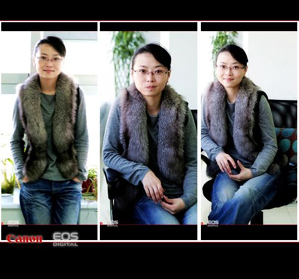
盐水对虾，很方便做的菜。在水中放入葱、姜、料酒、盐、糖，倒入虾，煮沸，想吃嫩的煮的时间不要太长就可以出锅。
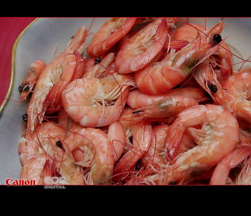
鱼用盐、糖、味精、料酒、蒸鱼豆豉油抹一遍，浸泡15分钟左右，放入微波炉，蒸汽模式下加热4到5分钟就可以吃了。
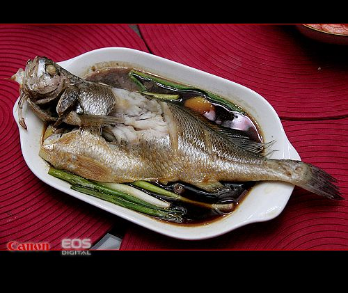
开了一下午的会，发言越到后面越让人打瞌睡。今年的聚餐居然在食堂里举行，桌上的菜也是朴实的可以，送给客人的礼品是公司的退货，很配合金融危机的调子。大家都不知道明年形式会怎么样，但对我们产品的销售似乎都比较看好。前两天听见一个被辞退的质检员在和主管告别，大致说希望需要人的时候请想着他....听着让人心酸，尤其在春节前被辞退，放在谁家里都不是个好消息。我们同情别人，我们自己也被人同情着，也许这世界不需要同情的感情存在？
公司要求正装出席，看到之前我曾写过的那个“聪明的女孩”穿了套毛料西服裤子，皮肤依然那么的光洁，剪了个短发；另一个前年来的女孩儿穿着面试时的西服裤子，里面依然是那件带着粉色装饰的白色衬衣；有的则穿着公司统一定制的宽大西服或是自己的毛衣裙子；一个去年进公司的小伙子拿着刚发的120元钱跑去买了件西服，领子很窄，压根不是搭配正常的领带，而是搭配细领带的那个款式...每当公司要求穿正装的时候，尤其在冬季，会显得那么的尴尬。公司想要创造正装氛围不是一时半会儿能普及的，首先收入上得允许我们能多准备几套不同季节的正装。我就穿了件白色衬衣，外面一件开襟毛衣，这当然和真正意义上的正装相去甚远。优雅的女人会马上夺人眼球，而特别的女孩子也一样让人驻足，虽然她们常常沉默，也不会浅薄地在人前喧哗出声响来引人注目，可那份自信淡定的气质却不是造作的产物，随着时间推移，她们会越来越有魅力，这魅力来源于她们的头脑。

正午阳光下的剪影，很动人。
非常贪恋冬季的太阳，多一些就多一些温暖。
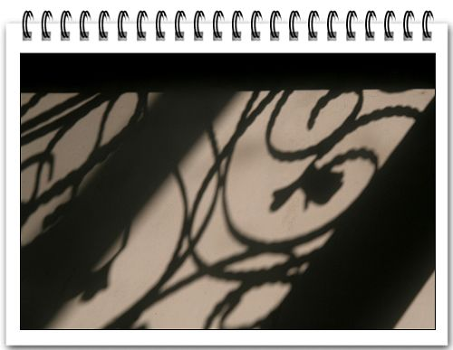
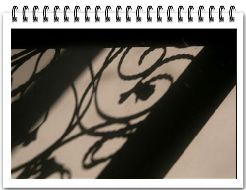
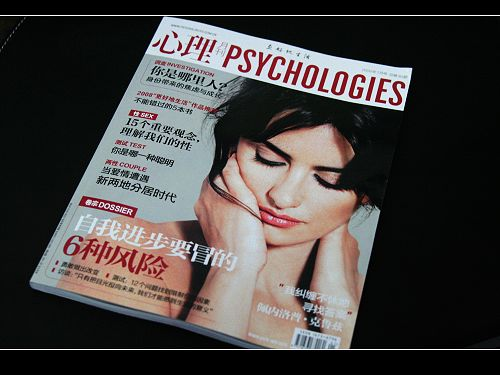
上周拿到2009年订购的元月份的《心理月刊》，不用再跑去书摊买杂志了，每个月这本书就会自己躺在桌上等着我来翻阅。
刚在jiajia的blog上看到一段话“......找到一个真正可以推心置腹的伴侣是多么不容易的事。但或许若是不那么诚实，反而才更长久......”这“不诚实”不仅仅是对伴侣，还应有对自己的“不诚实”。我常听到有人高谈阔论地说：“你看某某人，玩得凶呢，但人家该结婚就结婚，该生孩子就生孩子...”真不知道这些人究竟赞扬的是感情还是赤裸裸的交易？将伴侣当符号当为提倡？如果我们也能向自己隐瞒真实，那才可以“长久”，不是吗？这一切看起来似乎很复杂，如果有勇气还是可以梳理出一条简单的路可走。
这期的《心理月刊》中有一篇《端上一只温暖的锅》的文章，提到“简单纯粹”，大致这样写的：“电影明星秦祥林年轻的时候，颇做过些不靠谱的事，比如好赌，比如为了林青霞不惜伤害当时的妻子萧芳芳。人到中年，他说，他几乎不回忆青春岁月，一回忆满是尴尬和难堪。秦祥林40岁息影，便不再抛头露面，说出这样的话，更看得出他是演艺圈里少有的拿得起放得下的人。年轻的时候谁没有做过几件荒唐事？又想起一段禅宗公案。云游的和尚走到一条河边，看见小媳妇不敢过河，说，来吧我背你。过得河去，放下小媳妇接着赶路，根本不再想这事儿。对自己年少轻狂，做了就做了，与其成为负担，不如向和尚学习，坦率地放下，忘却---前面还要赶路呢，前面有无限风光。”
也许拿得起放得下，还真需要到达一定的年龄才能做到？一个二十几岁的人，是缺乏选择的勇气和是非的判断力，而女人过了三十岁，才算成熟起来，会抛弃复杂，追求简单纯粹的生活。如文中所说“用简单功能的手机，看书要捧纸质印刷品，拍照用超薄数码相机，家用电器开关功能不超过3项，听没有歌词的中外古典音乐......”对此，我很有共鸣，也是现在越来越宅的主要原因。作者苏眉说有次去买唱片，店老板说：“精神和心智完善、发展到一定高度，人就会追求形而上，所以年纪大了会听古典乐；它们没有使用语言文学，因为文字已经很难表达你这个年龄的情感。人生这一天天，找来找去，最后发现要找的是简单纯粹。”
黄油、蒜片、紫甘蓝、培根，加糖、盐和味精。黄油下锅后，放入蒜片，炒出蒜香味儿，放入紫甘蓝，翻炒几分钟倒入培根，继续翻炒，这期间不要放水哦。很好吃，可以试一下。
每次买菜都犯难，不知道买什么菜好，一个季节里就那么几种菜，翻来覆去也就吃那么几样。不过好久没吃鱼、虾了，偏好吃海鱼，每次买回来喜欢清炖着吃。
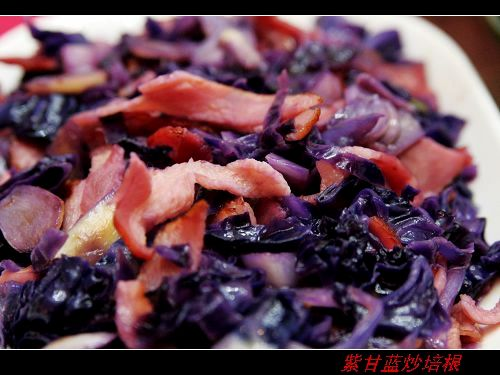
冬季最喜欢吃的香辣香肠，找人灌制的。里面配了辣椒和花椒，和普通香肠的味道不一样。
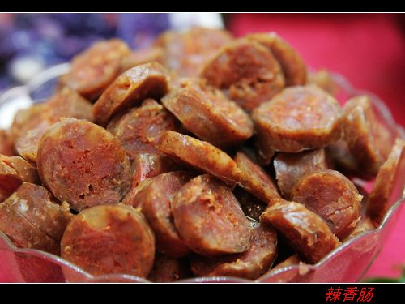
工作日烧的菜，都是下饭的。
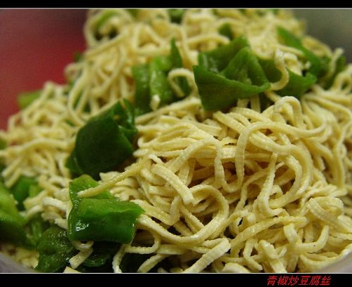
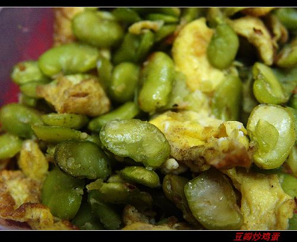
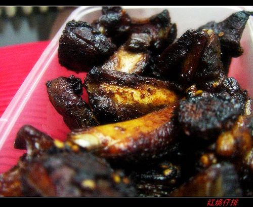
最后来道色拉：D
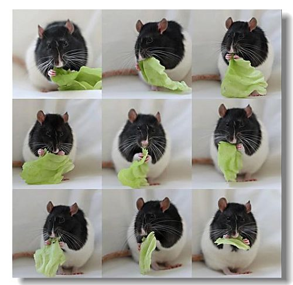
某天晚上忽然发现南湖的商店都统一了门头设计，想来是街道干的事儿。
文化大革命统一了人民的思想，现在却要统一商店的门头，除了颜色不同，字体和设计都是一致的。什么年代了？我们不能按照自己的愿望去选择自己想要的风格吗？我要我的门头光板一个，上面一个字没有...我要我的门口镶满闪烁钻石...那是我的风格啊，不可以吗？哪个孙子想出来把街景搞成整齐划一的摸样？多么荒唐而愚蠢的统一！
想起小时侯看过的一部国产动画片《超级肥皂》，大致讲某个人买了块肥皂，用这块肥皂洗衣服，什么颜色的肥皂洗出什么颜色的衣服，旁人见了马上也跑去买相同颜色的肥皂洗衣服，接着荒唐的情景出现了，大街上一色白....大家穿着相同颜色的衣服！这时，一个小孩儿身着不同颜色的衣服出现在人群中，大家都围观着这个孩子......个性，需要些无知无畏的精神？只是大人们的世界，孩子怎么可能理解？


（感谢haliyou提供超级肥皂动画连接）
给Luke戴上彩色的铃铛，让它也体会一下圣诞节的余温！
哇，这打扮很适合跳草裙舞哎~
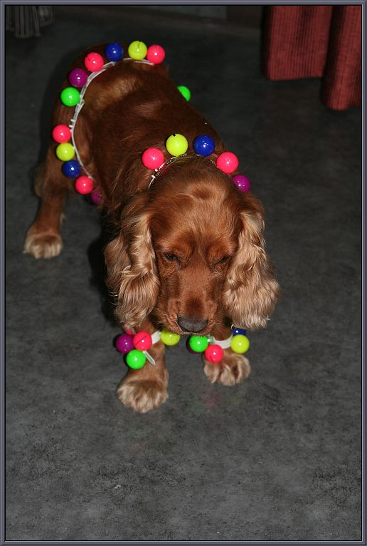
Luke戴上这些铃铛之后，走路变得异常缓慢，他不知道身上这些彩色的球球怎么会响呢~哈哈哈哈哈哈~
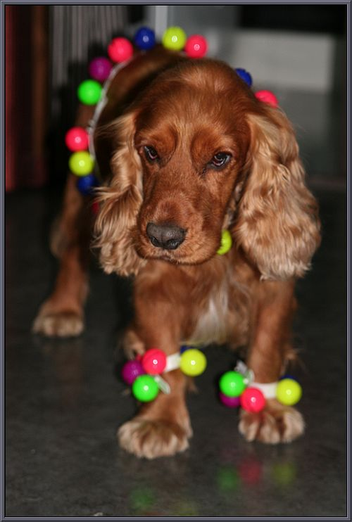
我的小可爱~比刚来的时候帅多啦~
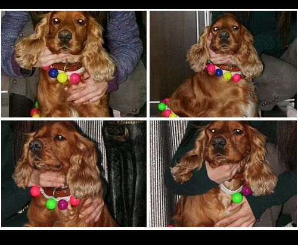
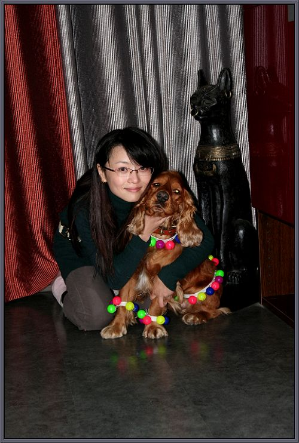